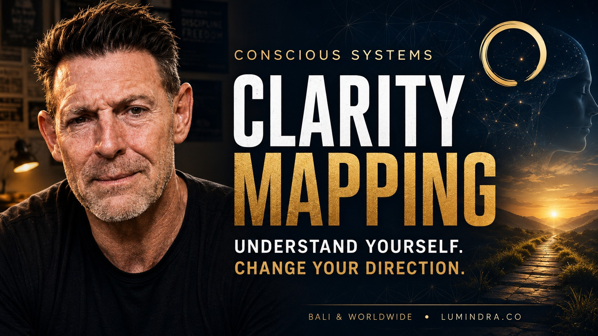

Real-World Proof
Lumindra is not built on claims alone. It is built on lived operational experience and systems tested in a real business.
Mark Tulloch — Founder
- Former COO of Bali Realty (Bali's leading property agency)
- 35+ years across hospitality, operations, leadership, and business growth
- International operating background: Australia, United Kingdom, and Bali
- MBA (Global), University of Newcastle
- Published author · Trained crisis counsellor · Public speaker
- Founding member, Bali AI Founders Club
Live Case Environment
- Sunshooters Bar & Grill (Legian, Bali) operates as a real-world proving ground for Lumindra's systems
- AI-driven content, WhatsApp automation, POS integration, and operational workflows tested live
- Rated 4.9 stars on GoFood · Top Service badge
- Every system clients receive has been pressure-tested in a real business environment
What Clients Say
Real people. Real stories. Real transformation. Clarity is the first step — transformation is the result.

This Clarity Mapping session was a turning point for me. For the first time, I truly understood the patterns, pressures and beliefs that were shaping my life and decisions.
Mark created a safe, no-judgement space where I could be completely honest. The insights I received were incredibly accurate, eye-opening and deeply personal.
I now have clarity, direction and practical tools I use every day. I feel more in control, more aligned and more like me than I have in years.
If you’re ready to understand yourself on a deeper level, this is 100% worth it.
I’ve been using the clarity mapping system that Mark created since early May. When I first started using the system I was in a very bad headspace.
It’s now early July and I have to say that things have improved significantly for me. My headspace is much clearer and life in general is improving.
I still have some moments where the darkness creeps back in, but by using the tools that Mark gave me I’m now able to control the darkness and shed light on situations that would have previously sent me over the edge.
Thanks Mark.
Why Lumindra Exists
Most AI advice sounds impressive until it hits the reality of an actual business. Lumindra was built to close that gap.
This is not generic consulting, trend-chasing, or theoretical AI strategy. It is hands-on, grounded implementation built around how real businesses actually operate day to day — team communication, customer flow, content systems, sales process, admin load, and decision-making under pressure.
The aim is simple: bring clarity, install useful systems, and create results that can actually be felt in the business.
Services
Clear entry points, practical delivery, and work shaped around the real operating rhythm of the business.
AI Consulting & Implementation
For Bali businesses that want practical AI adoption without confusion.
- AI audits
- Workflow design
- Content systems
- WhatsApp automation
- Automation mapping
- Staff onboarding
Conscious Systems
For founders, operators, and leaders who need clarity, alignment, and better decision-making under pressure.
- Clarity Mapping session
- Founder advisory
- 5-Step Realignment program
- Strategic reset sessions
- Couples realignment
Business Systems Advisory
For businesses needing tighter structure across operations, communication, process flow, and leadership rhythm.
- Operational review
- Systems diagnosis
- Decision bottleneck analysis
- Delivery and visibility audit
- Clarity-led restructuring
Watch the Work in Action
Mark Tulloch shares real-world AI implementation, business systems, and founder clarity content on YouTube.
Practical AI for real businesses · Founder clarity · Conscious Systems · Live Bali case studies
View the full channel →What Makes Lumindra Different
Not hype. Not generic AI talk. Real systems, real pressure, real implementation.
Real operator, not just an advisor
Mark Tulloch has spent decades inside live business environments — hospitality venues, operational teams, leadership pressure, crisis management, growth, restructuring, and daily execution across multiple countries.
Tested in a live business
Lumindra's systems are actively shaped and pressure-tested inside Sunshooters Bar & Grill in Bali, giving clients practical frameworks grounded in real-world use — not just slide decks.
Strategy plus implementation
The goal is to identify what matters, structure it clearly, and help put it into use. The work does not stop at ideas. It stops when the system is running.
About Mark Tulloch
Founder of Lumindra · Bali-based AI consultant and business systems practitioner
Mark Tulloch is an Australian entrepreneur based in Kerobokan, Bali, with more than 35 years of experience across hospitality management, operations leadership, and business development.
Before founding Lumindra, Mark served as Chief Operating Officer of Bali Realty — Bali's leading property agency — where he led operations across one of the most demanding real estate environments in Southeast Asia.
His career spans hospitality operations in the United Kingdom, Australia, and Bali, including high-volume venue management, team leadership, and operational turnaround work. He holds an MBA (Global) from the University of Newcastle, is a published author, trained crisis counsellor, and founding member of the Bali AI Founders Club.
Lumindra is the result of that lived experience meeting modern AI and systems design — bringing together practical business intelligence, implementation-focused consulting, and human-centered leadership.
Who this is for
- Bali business owners
- Hospitality operators
- Villa and property teams
- Founders feeling overloaded
- Leaders needing clarity before scaling
- Businesses curious about AI but unsure where to start
Not for
- People looking for hype
- Businesses wanting abstract slide decks without implementation
- Anyone expecting one-click AI magic
How Engagement Works
Clarity first. Then system design. Then practical implementation.
1. Clarity first
Start with a call, audit, or mapping session to identify what is actually happening inside the business — before any system is built.
2. System design
Clarify the pressure points, opportunities, and highest-value actions. Build a structured plan grounded in real operating conditions.
3. Practical implementation
Build or guide the systems that reduce friction and improve execution. Refine what works. Remove what does not. Keep the business moving clearly.
FAQ
Direct answers to the questions people ask when they are checking credibility.
Is Lumindra a large agency?
No. Lumindra is led directly by Mark Tulloch. That is intentional. Clients work close to the source, not handed off to a junior team.
Is this theory or real implementation?
The work is grounded in live business use, including systems tested inside Sunshooters Bar & Grill in Legian, Bali — an active operating venue.
Do you only work with hospitality?
No. Hospitality is a core strength, but the work also applies to founders, service businesses, property-related businesses, and operations-heavy teams of all kinds.
Are sessions only in Bali?
No. Sessions are available in Bali (Kerobokan / Legian) and via Zoom for clients anywhere in the world.
How do I get started?
Message directly on WhatsApp. Mark responds personally. No gatekeepers, no pre-qualification forms.
What does a session cost?
Entry points start from Rp 1,000,000 for a Conscious Systems Intensive. AI implementation packages from Rp 2,500,000. Contact directly for a conversation about your situation.
If the business feels busy but unclear, that is usually a systems problem.
Lumindra helps bring clarity to the noise, structure to the pressure, and practical AI into the real world of Bali business.